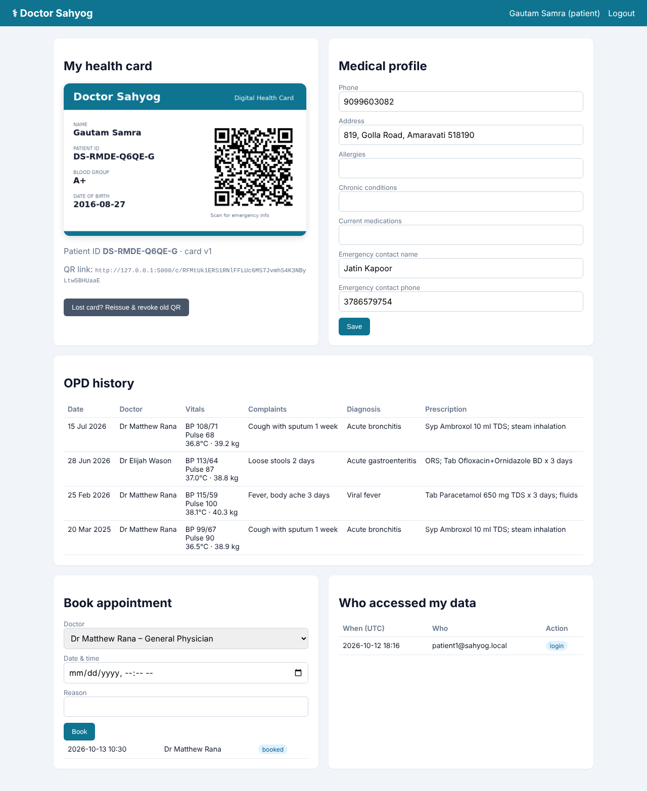
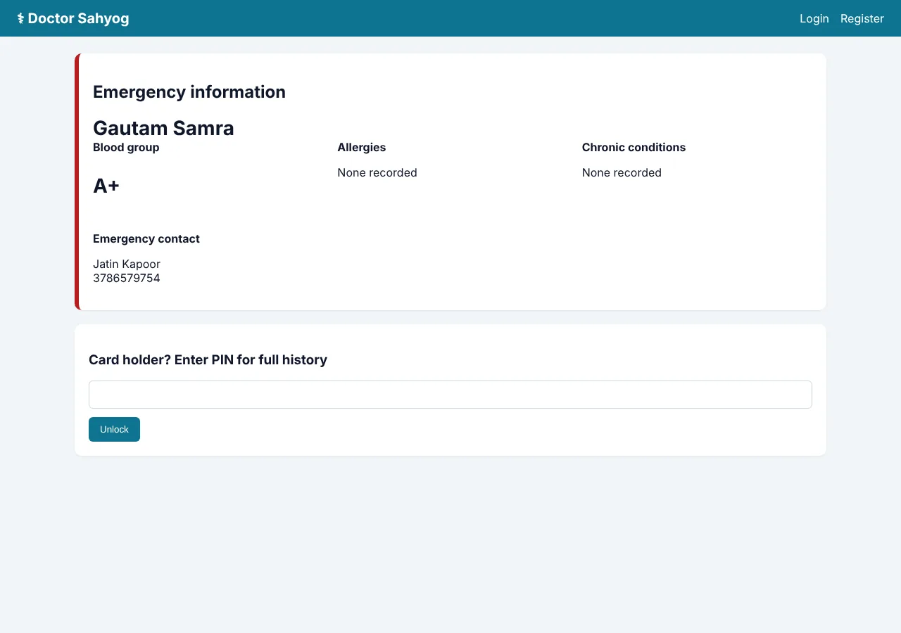
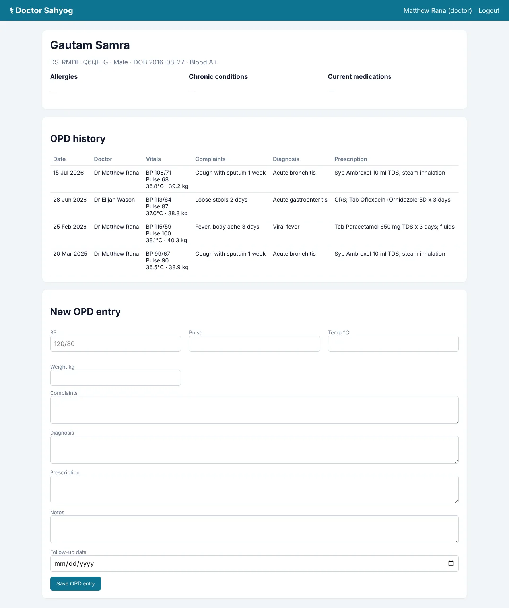
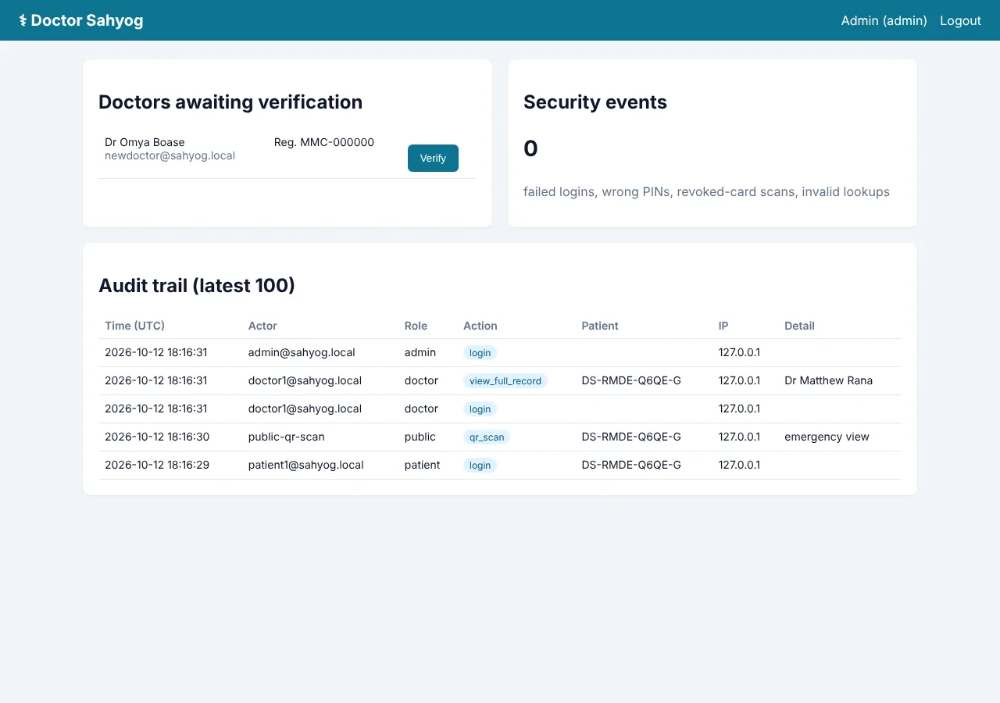
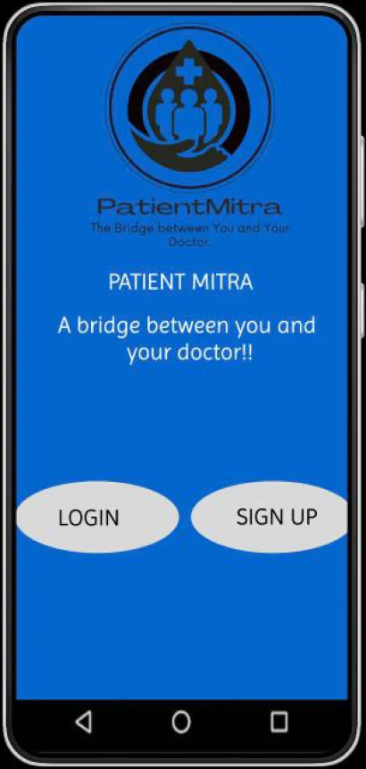
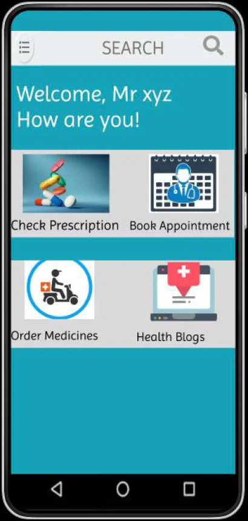
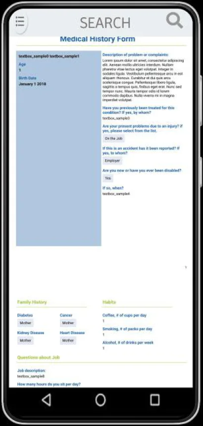
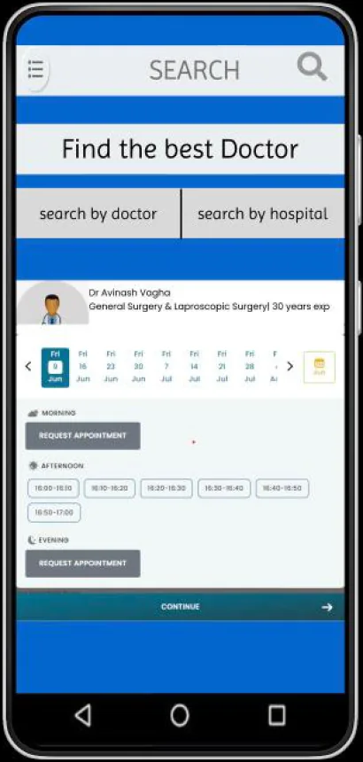
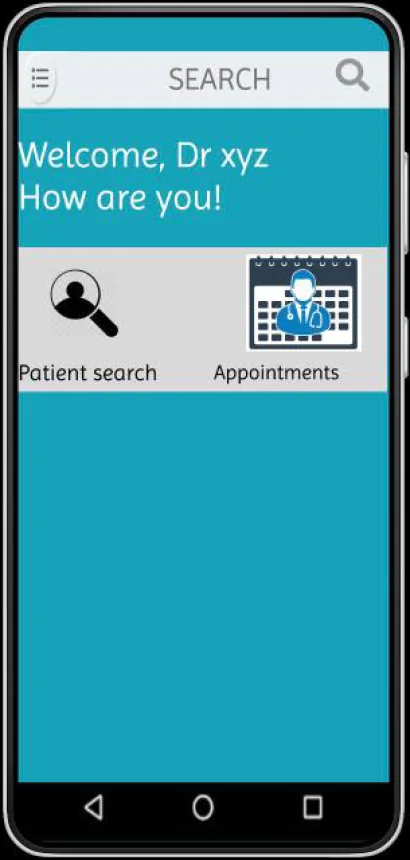

Doctor Sahyog
A QR-code digital health card with layered privacy
A secure EHR web app built around a printable health card with a QR code and a unique Patient ID. Doctors read history and record OPD visits, paramedics scanning the card see only emergency info, and patients unlock their full record with a PIN and can see everyone who accessed it.
Patient, paramedic, doctor and admin views
docs/*.png (Playwright screenshots)



V2 · MOBILE APP DESIGN · PUBLISHED IN GIJET 2023
Patient Mitra: the same health card, redesigned as a mobile app
115 screens (360 × 800) in Figma covering the full patient and doctor journeys: onboarding and login, dashboards, medical history, prescriptions, appointment booking by doctor or hospital, and medicine ordering with UPI / card payments. The web app implements the core of this design; ordering, payments and the health blog are next on the roadmap.





[01] ~/the-problem
Why it matters
In India, especially outside big cities, a patient’s history lives in paper files and memory. In an emergency, a doctor doesn’t know the blood group, allergies or current medication.
A plain QR code that exposes everything would be a privacy disaster. This project gives fast access with layered privacy.
Every view, scan, edit and failure goes into an append-only audit log, and patients can see who opened their record.
[02] ~/how-it-works
How it works
Each threat is matched to a control in code.
- 01
Database leak → field encryption
Allergies, conditions, medications, diagnoses, prescriptions, phone and address are encrypted at rest with Fernet (AES-128-CBC + HMAC-SHA256).
- 02
Forged QR → signed tokens
The QR holds an HMAC-SHA256 signed token with no medical data. Tampered tokens get a 404.
- 03
Lost card → instant revocation
“Reissue” bumps the card version and every old QR immediately returns 410 Gone.
- 04
Brute force → lockouts
5 wrong PINs → 15-minute lockout; salted scrypt/pbkdf2 passwords, account lockout and no user enumeration.
- 05
Fake doctors → verification + RBAC
Doctors get no record access until an admin verifies their medical-council number; role checks on every route.
- 06
Web attacks → hardened defaults
CSRF tokens, X-Frame-Options DENY, strict CSP, autoescaping, HttpOnly + SameSite cookies, Cache-Control no-store.
[03] ~/the-15-tests
The 15 tests
Every security control above has a test in tests/ (pytest, run in CI).
- PASSPatient-ID checksum catches typos
- PASSRegistration creates a card and encrypts fields
- PASSWeak passwords are rejected
- PASSPatients can’t open doctor pages (RBAC)
- PASSUnverified doctors are blocked
- PASSQR shows emergency info only; PIN unlocks the rest
- PASSPIN lockout after 5 failures
- PASSReissue revokes the old QR (410 Gone)
- PASSTampered QR tokens are rejected
- PASSDoctor access is audited and the OPD visit saved
- PASSLogin lockout and no user enumeration
- PASSSecurity headers are set
- PASSEvery genuine QR token verifies
- PASSThe audit log is append-only
- PASSPatient can export the record as a FHIR bundle
STATIC SCAN
Bandit on 843 lines of app code: 0 high, 0 medium. The 23 low findings are all random() calls in the synthetic-data seed script, not in the app.
LIVE HEADERS
X-Frame-Options: DENY · CSP default-src 'self' · X-Content-Type-Options: nosniff · Referrer-Policy: no-referrer · Cache-Control: no-store
ATTACK PROBES
Forged QR token → 404 · doctor and admin pages without login → redirected to sign-in (302)
Run on a local instance with synthetic data, Nov 2026.
[04] ~/who-sees-what
Who sees what
Portals and what each role can see.
| PORTAL | WHAT IT CAN DO |
|---|---|
| Doctor | Search by Patient ID, view history, OPD form (vitals, diagnosis, prescription, follow-up), appointments |
| Patient | Edit medical profile, view OPD history, book appointments, reissue a lost card, view the access log, export FHIR R4 |
| Paramedic (QR scan) | Emergency info only: blood group, allergies, current medication |
| Admin | Verify doctors, security-event counter, full audit trail |
The FHIR R4 export (Patient, Encounter, Condition, MedicationRequest, LOINC-coded Observations) is validated against the official schema in the tests; only the patient can export, and every export is audited.
HONEST LIMITS
— All data is synthetic; this is a reference implementation, not a deployed hospital system.
— ABDM sharing would also need NRCeS India profiles and ABHA-linked consent; doctors don’t have 2FA yet.
WHAT I’D DO NEXT
→ TOTP two-factor authentication for doctors
→ ABDM sharing: NRCeS FHIR profiles + ABHA consent flow
→ Lab-report uploads with malware scanning
→ Offline-first mobile scanner for rural clinics